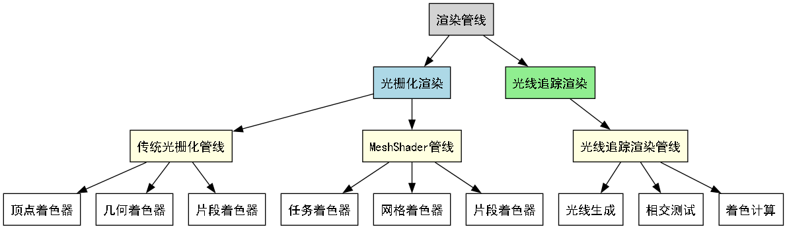
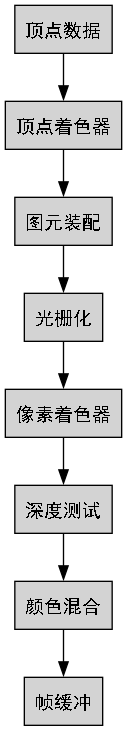
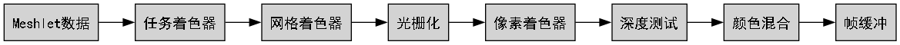
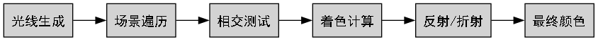

- 制作者
 1.14.0
1.14.0
|
FCT
|
本指南旨在帮助新加入的FCT库开发者理解不同渲染管线的基本概念和区别。通过掌握这些知识，您将能够更好地修改和扩展FCT库中的管线类层次结构。
渲染管线是将3D模型数据转换为屏幕上像素的过程。不同的渲染管线提供不同的处理方式和效果。

光栅化渲染是将3D场景转换为2D图像的传统方法。它通过将3D几何体投影到2D屏幕空间，然后填充像素来工作。
工作原理：
管线阶段：

特点：
适用场景：
详细了解：
工作原理：
管线阶段：

特点：
适用场景：
工作原理： 光线追踪通过模拟光线在场景中的传播来生成图像，提供物理准确的光照效果。
管线阶段：

特点：
适用场景：
| 管线类型 | 渲染速度 | 硬件要求 | 开发难度 | 视觉质量 |
|---|---|---|---|---|
| 传统光栅化 | ⭐⭐⭐⭐⭐ | ⭐⭐ | ⭐⭐ | ⭐⭐⭐ |
| MeshShader | ⭐⭐⭐⭐ | ⭐⭐⭐⭐ | ⭐⭐⭐⭐ | ⭐⭐⭐⭐ |
| 光线追踪 | ⭐⭐ | ⭐⭐⭐⭐⭐ | ⭐⭐⭐⭐⭐ | ⭐⭐⭐⭐⭐ |